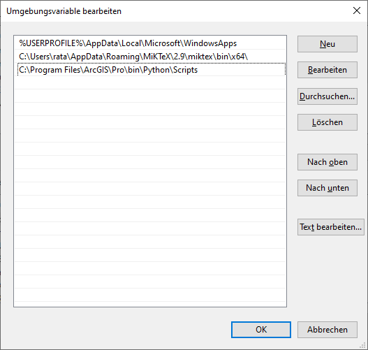
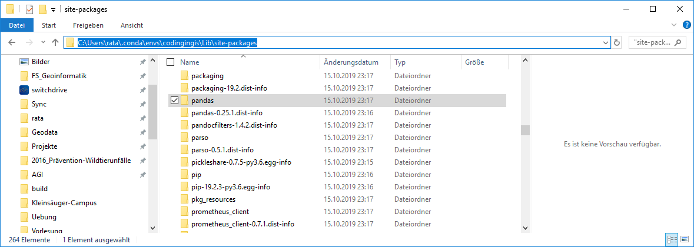
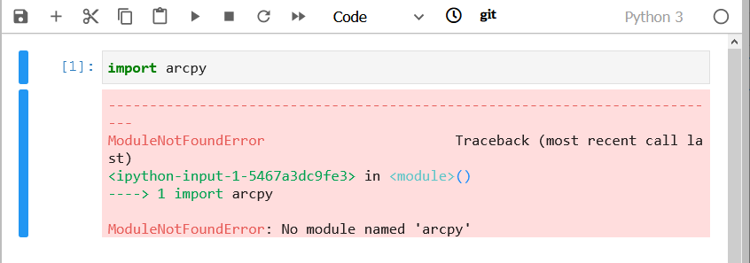

class: titleslide <h3 class = "title-header" style = "top: 20%;"> BSc Umweltingenieurwesen<br> Angewandte Geoinformatik | HS21 </h3> <h1 class = "title-header" style = "top: 40%;">Coding in GIS II</h1> <div class = "title-header title-bottom" style = "width: 20%"> <img src="zhaw_rgb_byline_d.png" width = 100%> </div> <div class = "title-header title-bottom" style = "left: 40%; width: 47%;"> Nils Ratnaweera<br> Forschungsgruppe Geoinformatik<br> <br> Institut für Umwelt und Natürliche Ressourcen <br> ZHAW Zürcher Hochschule für Angewandte Wissenschaften<br> Grüental, Postfach, CH-8820 Wädenswil<br> <br> rata@zhaw.ch --- name: zeitplan layout: true # Zeitplan <table> <thead align="left"> <tr> <th>Uhrzeit</th> <th>ΔT</th> <th>Thema</th> </tr> </thead> <tbody align="left"> <tr id = "first"> <th>13.00 – 13.30</th> <th>30</th> <th>Einführung in Module, Virtual Environments und Conda</th> </tr> <tr id = "second"> <td>13.30 – 13.45</td> <td>15</td> <td>Kapitel "Conda cheat sheet" sowie "Python Modules" lesen und verstehen</td> </tr> <tr class="pause"> <td></td> <td></td> <td></td> </tr> <tr id = "third"> <td>13.50 – 14.35</td> <td>45</td> <td>Aufgabe 5 "Function Basics" und Aufgabe 6 "Function Advanced"</td> </tr> <tr class="pause"> <td></td> <td></td> <td></td> </tr> <tr id = "fourth"> <td>14.50 – 15.00</td> <td>10</td> <td>Demo / Fragen</td> </tr> <tr id = "fifth"> <td>15:00 – 15.35</td> <td>35</td> <td>Aufgabe 7 "Zufallszahlen generieren" </td> </tr> <tr class="pause"> <td></td> <td></td> <td></td> </tr> <tr id = "sixth"> <td>15.50 – 16.25</td> <td>35</td> <td>Aufgabe 8 "Funktionen in DataFrames" </td> </tr> <tr id = "seventh"> <td>16.25 – 16.35</td> <td>10</td> <td>Wrap-up und Fragen</td> </tr> </tbody> </table> --- template: zeitplan class: first --- layout: false # Lernziele * Ihr wisst was Python Erweiterungen / Module sind und wie man sie installiert * Ihr kennt das Konzept von Conda Environments * Ihr wisst was eine *Working Directory* ist und könnt diese abfragen und setzen --- name: themen layout: true # Themen <ul> <li id = "first">Python Erweiterungen / Module</li> <li id = "second">Virtual Environments</li> <li id = "third">Conda</li> <li id = "fourth">Conda mit ArcGIS</li> <li id = "fifth">Leistungsnachweis</li> </ul> --- template: themen class: first --- layout: true # Python Erweiterungen / Module ---  --- template: themen class: second --- layout: true # Virtual Environment --- ohne Virtual Environments: .center[] .center[Alles wird an einem zentralen Ort installiert] --- mit Virtual Environments .center[] .center[unabhängige, wiederverwenbare Umgebungen] ??? davon gibt es in Python 3 verschiedene Implementationen: - "Virtualenv" - "pipenv" - "Conda Environment" --- template: themen class: third --- layout: false # Conda - Was kann *Conda* * Erstellen und verwalten von *Virtual Environments* * Installation von Erweiterungen (*Python Modules*) - Wie nutzt man *Conda*? * ~~Schritt 1: Software herunterladen und installieren~~ * Schritt 2: Systemvariable setzen (falls nötig) * Schritt 3: eine *Virtual Environment* erstellen * Schritt 4: die *Virtual Environment* aktivieren * Schritt 5: Modul installieren --- ## Schritt 1: Software herunterladen und installieren _conda_ wird in zwei verschiedenen Varianten angeboten: * *Miniconda*: * nur das Programm _conda_ * ohne grafisches User Interface * klein (50 – 100mb) * **wird mit ArcGIS Pro mitgeliefert** * *Anaconda*: * das Programm _conda_ * inkl. häufig genutzt Modules * inkl. einem Grafisches User Interface * gross (300 – 500 MB) --- layout: true ## Schritt 2: Systemvariable setzen (falls nötig) --- * Conda wird von der **Konsole** bedient * Dafür muss die Konsole wissen, wo das Programm installiert ist * Dies wird folgendermassen überprüft: -- 1. Konsole starten (Widowstaste+cmd) -- 2. Folgendes eingeben: `conda --version` -- 3. Versionsnummer ☺ / Error ☹ --- - Wird ein Programm in der Konsole aufgerufen, wird nach diesem Programm in verschiedenen Ordnern gesucht - Welche Ordner dies sind, wird in den Umgebungvariablen festgehalten - Wir müssen den `conda`-Pfad also ausfindig machen und in den Umgebungsvariabeln festhalten --- - Wenn ihr auf Windows arbeitet und ArcGIS installiert habt, ist conda vermutlich hier installiert: - `C:\Program Files\ArcGIS\Pro\bin\Python\Scripts` --- --- <img src = "AGI_HS19_06_Coding_in_GIS_II24.png" style = "width: 75%"> ---  --- - Nun sollte *conda* betriebsbereit sein - Konsole starten (cmd): ```ruby conda --version conda 4.3.27 # < kann auch variieren ``` - Wenn dies Funktioniert, können wir eine erste *conda environment* erstellen --- layout: true ## Schritt 3: Conda environment erstellen --- ```ruby conda create --name codingingis ``` --- ```ruby `conda` create --name codingingis ``` Ruft das Programm *conda* auf --- ```ruby conda `create` --name codingingis ``` Ruft den Befehl *create* auscondaauf Der *create* Befehl erstellt eben diese neue Environment in einem Standartverzeichnis --- ```ruby conda create `--name` codingingis ``` Kündigt an, dass gleich der Name der neuen Umgebung definiert wird --- ```ruby conda create --name `codingingis` ``` Bestimmt, das der Name der neuen Umgebung *codingingis* lauten soll --- <img src = "AGI_HS19_06_Coding_in_GIS_II26.png" width = 80%> - Speicherort: `C:\Users\rata\AppData\Local\ESRI\conda` - Mit `y` bestätigen --- <img src = "AGI_HS19_06_Coding_in_GIS_II27.png" width = 100%> --- layout: true ## Schritt 4: Environment aktivieren --- ```ruby activate codingingis ``` - Aktiviert die Environment mit dem Namen `codingingis` --- <img src = "AGI_HS19_06_Coding_in_GIS_II28.png" width = 100%> --- layout: true ## Schritt 5: Modul installieren --- <img src = "AGI_HS19_06_Coding_in_GIS_II29.png" width = 100%> --- ```ruby conda install -c conda-forge pandas ``` - Befehl um *pandas* zu installieren - Findet man über eine kurze websuche --- ```ruby `conda` install -c conda-forge pandas ``` - ruft das Programm *conda* auf --- ```ruby conda `install` -c conda-forge pandas ``` - ruft den Befehl *install* in Condaauf --- ```ruby conda install `-c` conda-forge pandas ``` - gibt an, dass jetzt gleich der *Channel* (i.e. das *Repository*) angegeben wird --- ```ruby conda install -c `conda-forge` pandas ``` - ist der Name des *channels* --- ```ruby conda install -c conda-forge `pandas` ``` - der Name des Moduls --- <img src = "AGI_HS19_06_Coding_in_GIS_II30.png" width = 100%> ---  --- Für Coding in GIS I – III brauchen wir folgende Module: * `jupyterlab` * `pandas` * `matplotlib` * `geopandas` * `descartes` Immer nach dem gleichen Syntax: ```ruby conda install -c conda-forge `pandas` # < Modul-Name jeweils ersetzen ``` Sobald jupyterlab installiert ist, könnt ihr die Anwendung mit folgendem Befehl in die Konsole starten: ```ruby jupyter lab ``` --- <img src = "AGI_HS19_06_Coding_in_GIS_II32.png" width = 100%> --- layout: false ## Modul Importieren <img src = "AGI_HS19_06_Coding_in_GIS_II33.png" width = 100%> zB `import pandas` --- ## Working Directory <img src = "AGI_HS19_06_Coding_in_GIS_II34.png" width = 100%> - wo die Pythonscripts / Notebooks sind - Ist v.a. beim einlesen / ausgeben von Dateien wichtig - kann mit `os.getcwd()` ermittelt werden --- ## Warum verbringen wir so viel Zeit mit `conda`? - Der sichere Umgang mit Conda ist eine gute Basis für eine harmonische Python-Beziehung - Conda wird in vielen Python Kursen / Tutorials vorausgesetzt und unzureichend erklärt - Mit conda können wir zwei Welten miteinander Verbinden -- <img src = "AGI_HS20_02_Coding_in_GIS_Ia66.png" class = "pull-left"> <img src = "AGI_HS19_06_Coding_in_GIS_II38.png" class = "pull-right"> --- template: themen class: fourth --- layout: true exclude: true # Conda mit ArcGIS --- exclude: true --- exclude: true ```python arcpy.analysis.SummarizeWithin("Wald_NichtWald", "Tick_Original", r"C:\unsicherheit.gdb\summary", "KEEP_ALL", None, "ADD_SHAPE_SUM", '', None, "NO_MIN_MAJ", "NO_PERCENT", None ) ``` --- exclude: true  --- exclude: true  --- exclude: true <img src = "AGI_HS19_06_Coding_in_GIS_II46.png" width = 70%> --- exclude: true  --- exclude: true  --- exclude: true  --- exclude: true  --- exclude: true  --- exclude: true  --- exclude: true  --- exclude: true  --- exclude: true  --- exclude: true  --- exclude: true  --- exclude: true  --- exclude: true  --- template: themen class: fifth --- layout: true # Leistungsnachweis --- Gemeinsam kommende Woche (Coding in GIS III): - Monte Carlo Simulation mit den Zeckenstichdaten - Systematik gleich wie in *Datenqualität und Unsicherheit* - Neu: Alles in Python (auch die Erstellung der Simulierten Daten)  --- Eure Leistung: - Erstellen eines sauber kommentierten Reports - In JupyterLabs mit JupyterNotebook (Python und Markdown) - Experimentieren mit verschiedenen Radien - Visualisierung der Daten --- layout: true # Keep your code tidy! --- ```python import padnas as pd pd.read_csv("zeckenstiche.csv") import pandas as pd os.getcwd() import os zeckenstiche = pd.read_csv("Zeckenstiche.csv") zeckenstiche = pd.read_csv("Zeckenstiche.txt") zeckenstiche = pd.read_csv("zeckenstiche.txt") ``` --- ```python *import padnas as pd pd.read_csv("zeckenstiche.csv") *import pandas as pd os.getcwd() *import os zeckenstiche = pd.read_csv("Zeckenstiche.csv") zeckenstiche = pd.read_csv("Zeckenstiche.txt") zeckenstiche = pd.read_csv("zeckenstiche.txt") ``` ??? Alle "import» befehle zu beginn des scripts --- ```python *import padnas as pd *import pandas as pd *import os pd.read_csv("zeckenstiche.csv") os.getcwd() zeckenstiche = pd.read_csv("Zeckenstiche.csv") zeckenstiche = pd.read_csv("Zeckenstiche.txt") zeckenstiche = pd.read_csv("zeckenstiche.txt") ``` --- ```python *import padnas as pd import pandas as pd import os pd.read_csv("zeckenstiche.csv") os.getcwd() *zeckenstiche = pd.read_csv("Zeckenstiche.csv") *zeckenstiche = pd.read_csv("Zeckenstiche.txt") zeckenstiche = pd.read_csv("zeckenstiche.txt") ``` ??? Code-Zeilen, die Nicht funktinoieren auskommentieren oder löschen --- ```python import pandas as pd import os *pd.read_csv("zeckenstiche.csv") *os.getcwd() zeckenstiche = pd.read_csv("zeckenstiche.txt") ``` ??? Die Reihenfolge der Ausführung berücksichtigen! Ein Skript sollte von oben bis unten funktionieren --- template: zeitplan class: second --- template: zeitplan class: third --- template: zeitplan class: fourth --- template: zeitplan class: fifth --- template: zeitplan class: sixth --- template: zeitplan class: seventh